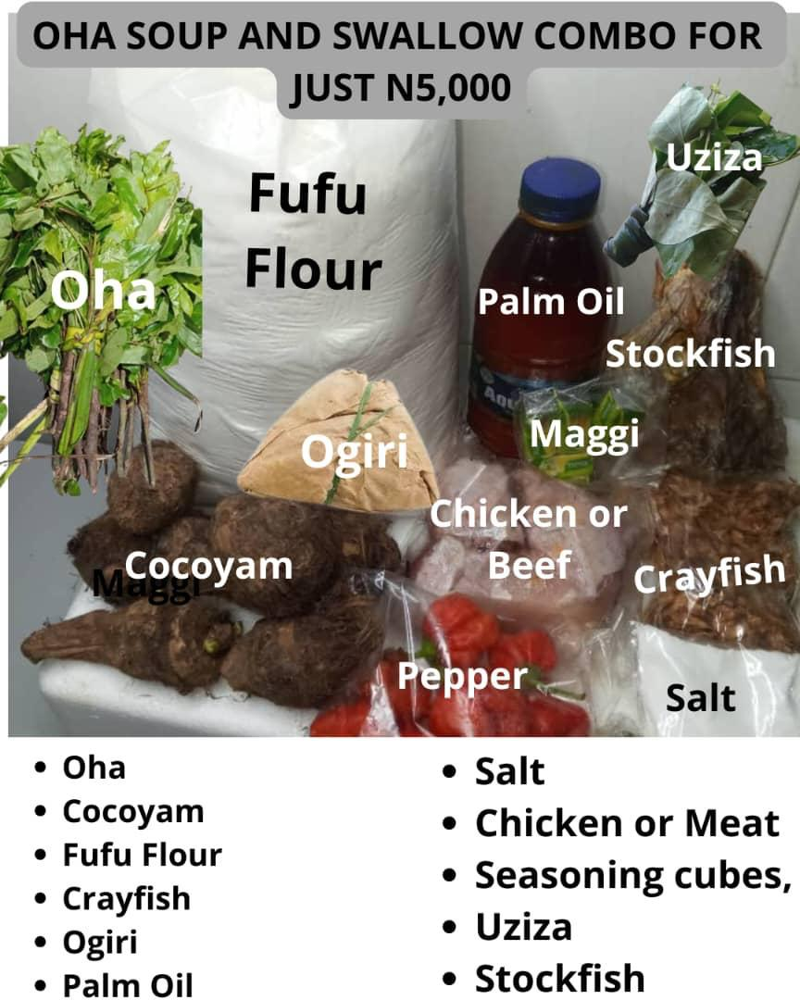
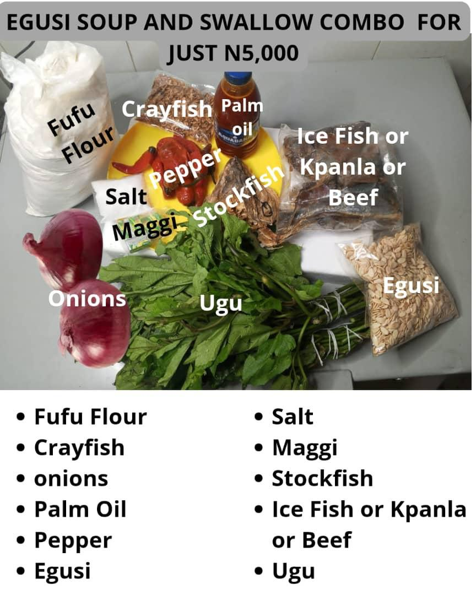
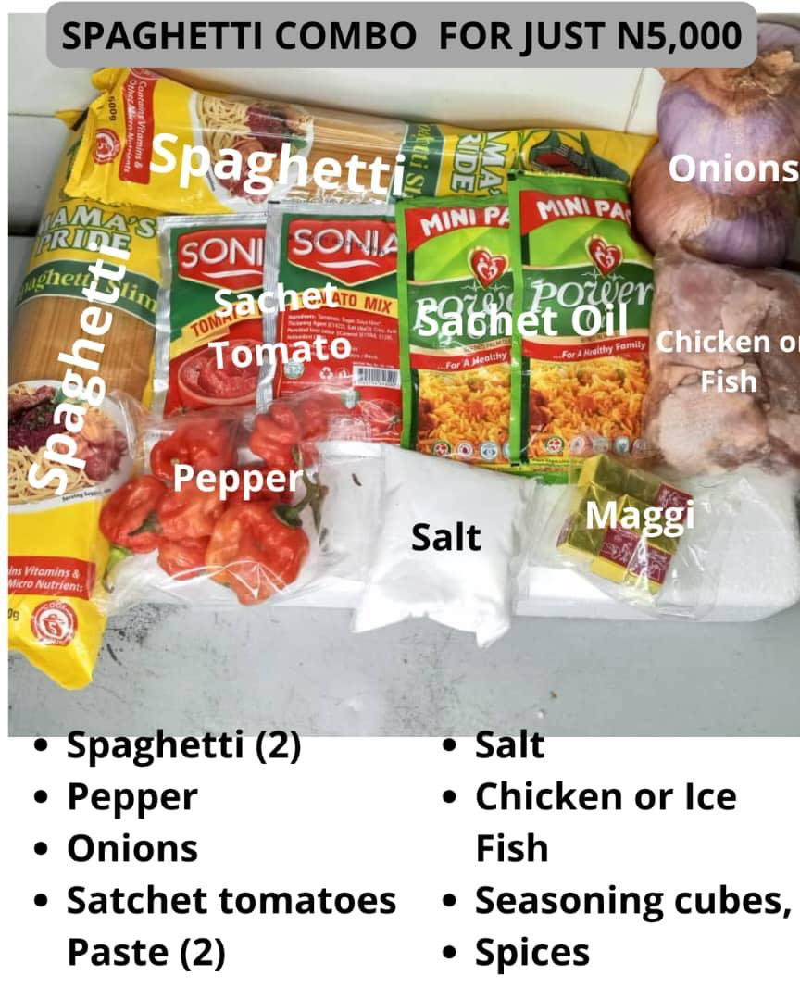
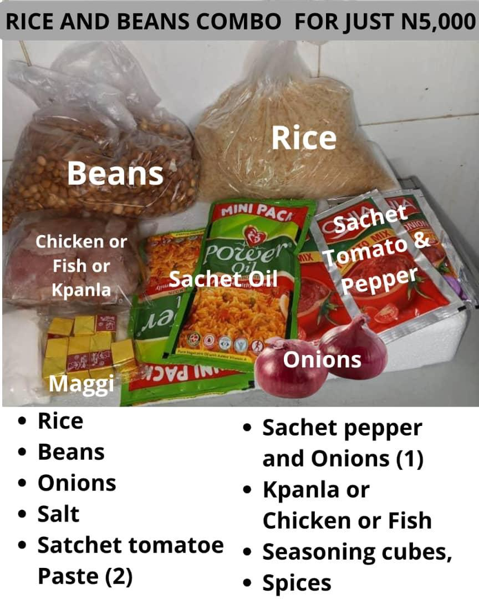
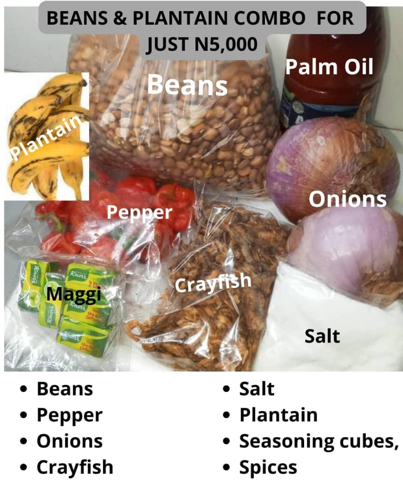

🏪 Neighborhood Shops Nationwide – A Unique Sales Strategy
We are activating Neighborhood Shops across Nigeria to bring FOODSURPLUS products closer to families and communities — making healthy food more accessible, affordable, and sustainable.
✅ What’s Inside the ₦5000 Combo?
Rice
Beans
Garri
Bread
Onions
All sourced directly from farmers and trusted producers for maximum freshness, quality, and value.





🌍 Why the FOODSURPLUS Combo is Different
💸 Affordability: Just ₦1000 per person
🛒 Convenience: Available at FOODSURPLUS neighborhood shops and delivery agents
🤝 Empowerment: Supports shop owners, marketers, and farmers
🌱 Community Impact: Reduces food waste, builds local wealth
📦 How to Get Yours
You can pick up the ₦5000 Combo Pack at any of our FOODSURPLUS neighborhood shops:
📍 Jakande Shop
📍 Oniru Shop
📍 ...and more locations coming across VI to Chevron
Or you can:
📲 Order through our marketers & delivery agents
📞 Call/WhatsApp: 08075994444
🎯 Who Can Use the ₦5000 Combo?
👨👩👧👦 Families
🎓 Students
⛪ Churches & NGOs
🏢 Offices & Groups
🙋 Anyone needing affordable food
🎉 “Cook & Win Challenge” 🍛
Buy a ₦5000 Combo, cook with it, and stand a chance to win weekly prizes!